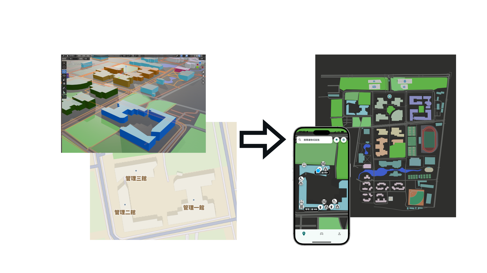
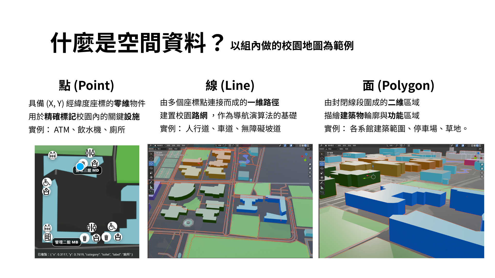
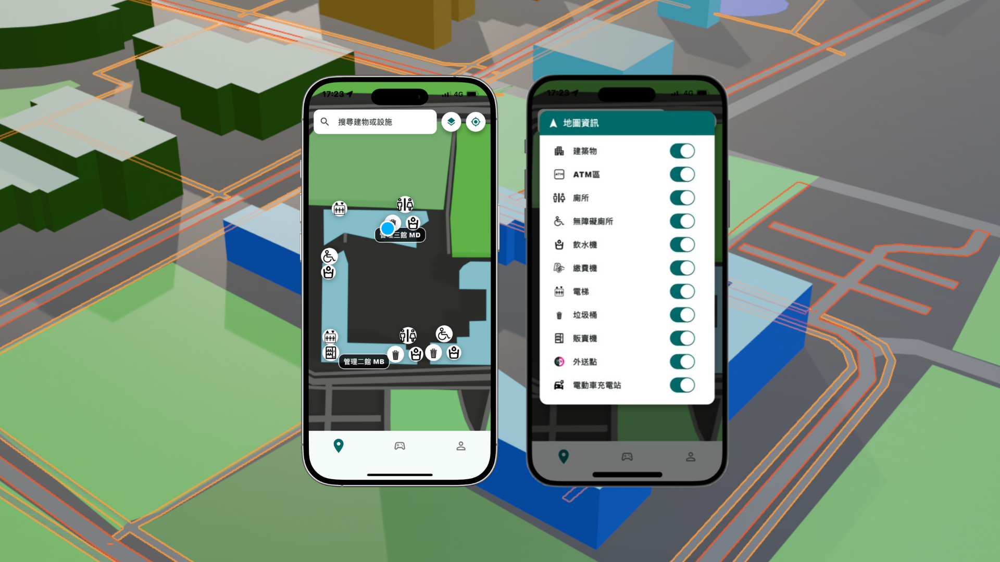

Back to Home
雲座標之空間資訊應用
3D 校園導航 App
結合 Flutter, Blender, OpenStreetMap (OSM) 與 GeoJSON 圖層技術的 3D 校園導航 App。 透過仿射變換演算法，實現高精度的空間資訊應用。
本作品深入挖掘雲科大的歷史與學生生活，並榮獲雲林設計獎肯定，成功將數位導航與在地文化傳承結合。
榮獲 2024 雲林設計獎
作品官網

Origin & Strategy
專案緣起與策略轉向
初始願景是打造 LBS 校園社交遊戲，但遭遇 GPS 室內遮蔽率 90% 與地圖隱私限制的現實挑戰。面對這些技術瓶頸，我們決定重新調整方向。
專案策略從「上層遊戲開發」轉向「底層空間資料優化」。利用 geojson.io 自建校園路網，並透過仿射變換演算法解決座標偏移，確保真實世界與數位模型的精準對接。

-
關鍵突破：輕量化空間資料庫
原始 3D 專案檔案高達 8.32 GB，導致行動端載入失敗；經優化轉向「輕量化空間資料庫」後，成功降至 MB 級別，實現 3 秒內閃電載入。
Geographic Information
地理資訊視覺化
從點、線、面建構數位校園
利用地理資訊系統 (GIS) 的標準模型，精確標記校園設施（點）、建置導航路網（線）以及描繪建物輪廓（面），將混亂的原始數據轉化為結構化的空間圖層。
GEO_VISUALIZATION

GEO_DATA_TRANSFORM

高精度定位與校園圖層
達成誤差小於 5 米的高精度定位，並設計了可自定義開關的校園資訊圖層，讓使用者能一鍵精準尋找 ATM、飲水機與廁所等重要設施。